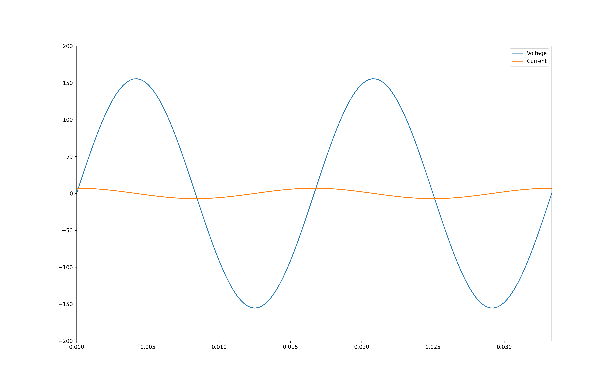
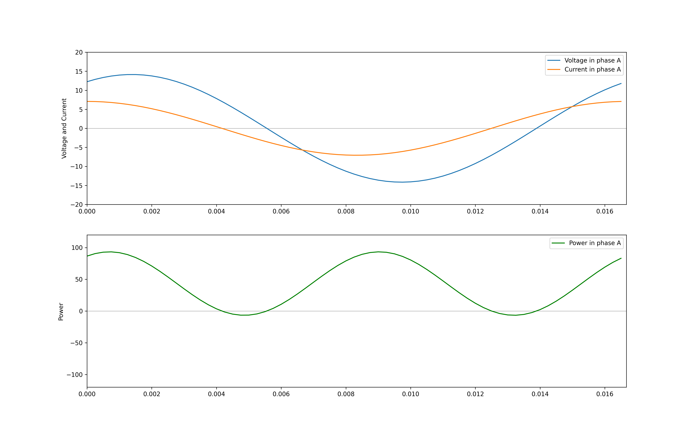
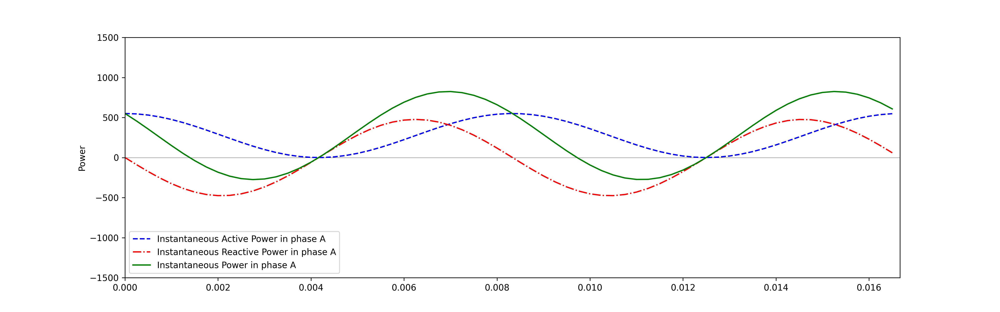
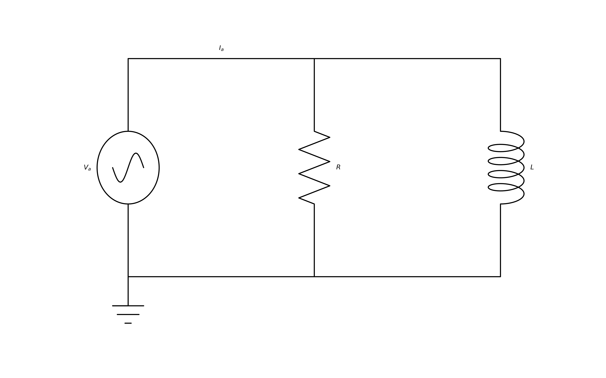
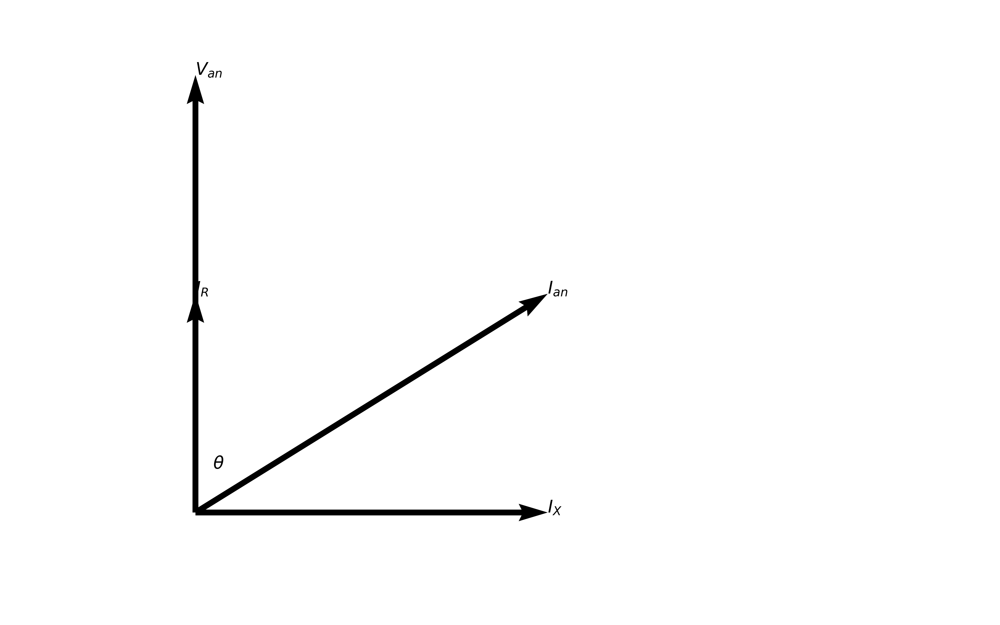
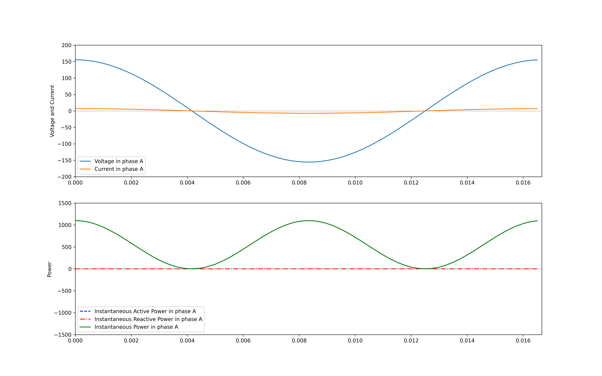
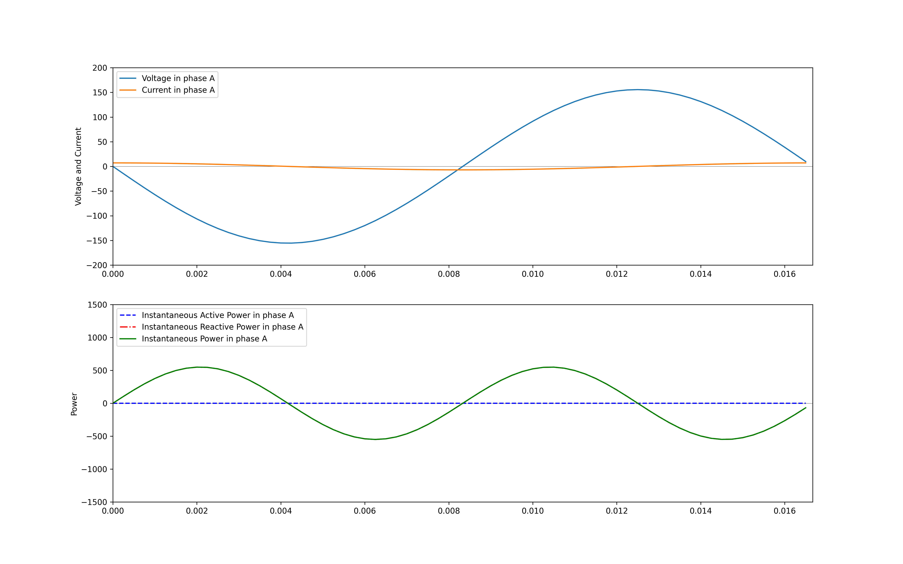
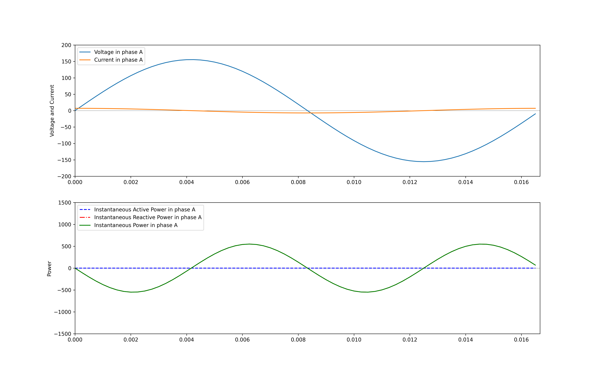

Active, reactive and apparent power
what is active power, what is reactive power, what is real power, what is imaginary power, Active Power, Reactive Power, Apparent Power
Introduction to basic concepts
\(V\) and \(I\) are used to indicate phasor representations of sinusoidal voltages and currents. \(E\) is used to represent generated voltage or electromotive force (emf). \(V\) is often used to measure a potential difference between two points. \(v\) is used to represent the instantaneous voltage between two points.
Let voltage be defined as the following:
\(v = 155.563491861 \cos(\omega t + \phi)\)
\(i = 7.07106781187 \cos\omega t\)
Let us plot this and see what it looks like.
Code
import matplotlib.pyplot as plt
import numpy as np
f0 = 60 # Hz (frequency)
phi = -np.pi/2 # phase shift
Av = 155.563491861 # voltage peak
Ai = 7.07106781187 # current peak
fs = 4000 # steps
t = np.arange(0.000, 6/f0, 1.0/fs) # plot from 0 to .02 secs
v = Av * np.cos(2 * np.pi * f0 * t + phi)
i = Ai * np.cos(2 * np.pi * f0 * t )
fig, ax = plt.subplots(1,1,figsize = (16,10))
ax.plot(t, v, label = 'Voltage')
ax.plot(t, i, label = 'Current')
ax.axis([0, 2/f0, -200, 200])
ax.legend();
plt.savefig("./power_3_0.png", transparent=True, dpi=300)
We can calculate the maximum, minimum and the RMS value as follows:
def rms(x):
return np.sqrt(np.mean(x**2))
print('Maximum', max(v))
print('Minimum', min(v))
print('RMS', rms(v))
print('Ratio max/rms', max(v)/rms(v))
try:
np.testing.assert_approx_equal(np.sqrt(2), max(v)/rms(v))
except:
print 'Numbers not equal'
else:
print 'Maximum value = √2 x RMS value'Maximum 155.563491861
Minimum -155.563491861
RMS 110.0
Ratio max/rms 1.41421356237
Maximum value = √2 x RMS value\(|V|\) is used to represent magnitude of the phasors.
\(|V| = 110 = \frac{155.5634}{\sqrt{2}}\)
The RMS value of \(v\) is what is read by a voltmeter.
Expression for power
Let voltage and current be expressed by:
\(v_{an} = V_{max} \cos(\omega t + \theta)\)
\(i_{an} = I_{max} \cos\omega t\)
Instantaneous power is calculated by \(p_{a} = v_{an} \times i_{an}\). If we plot the above equations, assuming \(\theta = -\frac{\pi}{6}\), we get the following.
Code
f0 = 60 # Hz (frequency)
phi = -np.pi/6 # phase shift
Av = 10*np.sqrt(2) # voltage peak
Ai = 5*np.sqrt(2) # current peak
fs = 4000 # steps
t = np.arange(0.000, 1/f0, 1.0/fs) # plot from 0 to .02 secs
v = Av * np.cos(2 * np.pi * f0 * t + phi)
i = Ai * np.cos(2 * np.pi * f0 * t )
fig, axs = plt.subplots(2,1,figsize = (16,10))
ax1 = axs[0]
ax1.axhline(linewidth=0.25, color='black')
ax1.axvline(linewidth=0.25, color='black')
ax1.plot(t, v, label = 'Voltage in phase A')
ax1.plot(t, i, label = 'Current in phase A')
ax1.set_ylabel('Voltage and Current')
ax1.axis([0, 1/f0, -20, 20]);
ax1.legend()
ax2 = axs[1]
ax2.axhline(linewidth=0.25, color='black')
ax2.axvline(linewidth=0.25, color='black')
ax2.plot(t, v*i, label = 'Power in phase A', color='g')
ax2.set_ylabel('Power')
# for tl in ax2.get_yticklabels():
# tl.set_color('g')
ax2.legend()
ax2.axis([0, 1/f0, -120, 120]);
plt.savefig("./power_11_0.png", transparent=True, dpi=300)
We can decompose the instantaneous power following the steps below.
\(v_{an} = V_{max} \cos(\omega t + \theta)\)
\(i_{an} = I_{max} \cos\omega t\)
\(p = v_{an} \times i_{an}\)
\(p = V_{max} \cos(\omega t + \theta) \times I_{max} \cos\omega t\)
\(p = V_{max}I_{max} \cos(\omega t + \theta) \times \cos\omega t\)
We know that,
\(2\cos \theta \cos \varphi = {{\cos(\theta - \varphi) + \cos(\theta + \varphi)}}\)
\(p = V_{max}I_{max} \cos(\omega t + \theta) \cos\omega t\)
\(p = \frac{V_{max}I_{max}}{2}({{\cos(\omega t + \theta - \omega t) + \cos(\omega t + \theta + \omega t)}})\)
\(p = \frac{V_{max}I_{max}}{2}({{\cos\theta + \cos(2\omega t + \theta )}})\)
The second \(\cos\) term is of the following form,
\(\cos(\alpha \pm \beta) = \cos \alpha \cos \beta \mp \sin \alpha \sin \beta\,\)
\(p = \frac{V_{max}I_{max}}{2}({{\cos\theta + \cos 2\omega t \cos \theta - \sin 2\omega t \sin \theta}})\)
\(p = \frac{V_{max}I_{max}}{2}({{\cos\theta (1 + \cos 2\omega t) - \sin 2\omega t \sin \theta}})\)
\(p = \frac{V_{max}I_{max}}{2} \cos\theta (1 + \cos 2\omega t) - \frac{V_{max}I_{max}}{2} \sin 2\omega t \sin \theta\)
\(\theta\) is the phase angle of one of the phasors. In our case, \(\theta\) is the phase angle of Voltage, when the angle of Current is 0
Assuming \(\theta = -\theta\),
\(\cos(\theta) = \cos(-\theta)\)
\(\sin(\theta) = - \sin(-\theta)\)
Hence,
\(p = \frac{V_{max}I_{max}}{2} \cos\theta (1 + \cos 2\omega t) + \frac{V_{max}I_{max}}{2} \sin 2\omega t \sin \theta\)
We see that the sign of the first term remains unaffected by the sign of \(\theta\)
Let us plot the two parts of this equation.
Code
f0 = 60 # Hz (frequency)
phi = -np.pi/3 # phase shift
Av = 110*np.sqrt(2) # voltage peak
Ai = 5*np.sqrt(2) # current peak
fs = 4000 # steps
t = np.arange(0.000, 1/f0, 1.0/fs) # plot from 0 to .02 secs
v = Av * np.cos(2 * np.pi * f0 * t + phi)
i = Ai * np.cos(2 * np.pi * f0 * t )
fig, axs = plt.subplots(1,1,figsize = (16,5))
# ax1 = axs[0]
# ax1.axhline(linewidth=0.25, color='black')
# ax1.axvline(linewidth=0.25, color='black')
# ax1.plot(t, v, label = 'Voltage in phase A')
# ax1.plot(t, i, label = 'Current in phase A')
# ax1.set_ylabel('Voltage and Current')
# ax1.axis([0, 1/f0, -200, 200]);
# ax1.legend(loc='lower left')
ax2 = axs
ax2.axhline(linewidth=0.25, color='black')
ax2.axvline(linewidth=0.25, color='black')
#$p = \frac{V_{max}I_{max}}{2} \cos\theta (1 + \cos 2\omega t)
# + \frac{V_{max}I_{max}}{2} \sin 2\omega t \sin \theta $
p_R = Av*Ai/2*(np.cos(phi) * (1 + np.cos(2 * 2 * np.pi * f0 * t)))
p_X = Av*Ai/2*(np.sin(phi) * (np.sin(2 * 2 * np.pi * f0 * t)))
ax2.plot(t, p_R, label = 'Instantaneous Active Power in phase A', linestyle='--', color = 'b')
ax2.plot(t, p_X, label = 'Instantaneous Reactive Power in phase A', linestyle='-.', color = 'r')
#ax2.plot(t, v*i, label = 'Power in phase A', color='g')
ax2.plot(t, p_R+p_X, label = 'Instantaneous Power in phase A', color='g')
ax2.set_ylabel('Power')
ax2.legend(loc='lower left')
ax2.axis([0, 1/f0, -1500, 1500]);
plt.savefig("power_16_0.png", transparent=True, dpi=300)
The blue line (active power) is always positve and has an average value of \(\frac{V_{max}I_{max}}{2}\cos\theta\). If we use RMS values, we get
\(P = \frac{V_{max}}{\sqrt{2}} \frac{I_{max}}{\sqrt{2}} \cos\theta\)
\(P = |V||I|\cos\theta\)
The average value of the red line (reactive power) is equal to zero.
The maximum value of the instantaneous reactive power is \(\frac{V_{max}I_{max}}{2} \sin \theta\)
Or,
\(Q = |V||I|\sin\theta\)
So why is it called real power?
Code
plt.rc("font", size=20)
fig, ax = plt.subplots(1,1,figsize = (16,10))
ax.axis('off');
import schemdraw as schem
import schemdraw.elements as e
# schem.use('svg')
d = schem.Drawing()
V1 = d.add( e.SOURCE_SIN, label='$V_{a}$' )
L1 = d.add( e.LINE, d='right', label='$I_{a}$')
d.push()
R = d.add( e.RES, d='down', botlabel='$R$' )
d.pop()
d.add( e.LINE, d='right' )
d.add( e.INDUCTOR2, d='down', botlabel='$L$' )
d.add( e.LINE, to=V1.start )
d.add( e.GND )
d.draw(ax=ax, show=False)
plt.savefig("./schemdraw.png", dpi=300, transparent=True)
Code
plt.rc("font", size=20)
fig, ax = plt.subplots(1,1,figsize = (16,10))
soa =np.array([[0,0,0,5],[0,0,0,10],[0,0,5,0],[0,0,5,5]])
X,Y,U,V = zip(*soa)
ax = plt.gca()
ax.quiver(X,Y,U,V,angles='xy',scale_units='xy',scale=1)
ax.set_xlim([-1,10])
ax.set_ylim([-1,10])
ax.text(5, 0, r'$I_{X}$')
ax.text(0, 5, r'$I_{R}$')
ax.text(5, 5, r'$I_{an}$')
ax.text(0, 10, r'$V_{an}$')
ax.text(0.25, 1, r'$\theta$')
ax.axis('off');
plt.savefig("./power_20_0.png", transparent=True, dpi=300)
We know that \(\theta\) is the phase difference between the Voltage and Current.
\(p = \frac{V_{max}I_{max}}{2} \cos\theta (1 + \cos 2\omega t) + \frac{V_{max}I_{max}}{2} \sin 2\omega t \sin \theta\)
The first term can be rewritten as
\(\frac{V_{max}I_{max}}{2} \cos\theta (1 + \cos 2\omega t)\)
\(V_{max}I_{max} \cos\theta \cos^2 \omega t\)
\(V_{max}\cos \omega t \times I_{max}\cos\theta\cos \omega t\)
Similarly the second term can be rewritten as
\(V_{max}\cos \omega t \times I_{max}\sin \omega t \sin\theta\)
From the above figure we can see that power can be written as
\(p_{active} = v_{a} \times i_{R}\)
\(p_{reactive} = v_{a} \times i_{X}\)
Special cases
\(P\) or active power or real power is the power that is dissipated in the resistor, in the form of heat energy. \(Q\) or reactive power is the power that oscillates between the source and inductor or the capacitor. And \(\theta\) is determined by the nature of the impedance.
Let’s look at three cases
Case 1 : \(\theta\) is zero
When we assume \(\theta\) is zero, the load is purely resistive
Code
f0 = 60 # Hz (frequency)
phi = 0 # phase shift
Av = 110*np.sqrt(2) # voltage peak
Ai = 5*np.sqrt(2) # current peak
fs = 4000 # steps
t = np.arange(0.000, 1/f0, 1.0/fs) # plot from 0 to .02 secs
v = Av * np.cos(2 * np.pi * f0 * t + phi)
i = Ai * np.cos(2 * np.pi * f0 * t )
fig, axs = plt.subplots(2,1,figsize = (16,10))
ax1 = axs[0]
ax1.axhline(linewidth=0.25, color='black')
ax1.axvline(linewidth=0.25, color='black')
ax1.plot(t, v, label = 'Voltage in phase A')
ax1.plot(t, i, label = 'Current in phase A')
ax1.set_ylabel('Voltage and Current')
ax1.axis([0, 1/f0, -200, 200]);
ax1.legend(loc='lower left')
ax2 = axs[1]
ax2.axhline(linewidth=0.25, color='black')
ax2.axvline(linewidth=0.25, color='black')
#$p = \frac{V_{max}I_{max}}{2} \cos\theta (1 + \cos 2\omega t)
# + \frac{V_{max}I_{max}}{2} \sin 2\omega t \sin \theta $
p_R = Av*Ai/2*(np.cos(phi) * (1 + np.cos(2 * 2 * np.pi * f0 * t)))
p_X = Av*Ai/2*(np.sin(phi) * (np.sin(2 * 2 * np.pi * f0 * t)))
ax2.plot(t, p_R, label = 'Instantaneous Active Power in phase A', linestyle='--', color = 'b')
ax2.plot(t, p_X, label = 'Instantaneous Reactive Power in phase A', linestyle='-.', color = 'r')
#ax2.plot(t, v*i, label = 'Power in phase A', color='g')
ax2.plot(t, p_R+p_X, label = 'Instantaneous Power in phase A', color='g')
ax2.set_ylabel('Power')
ax2.legend(loc='lower left')
ax2.axis([0, 1/f0, -1500, 1500]);
plt.savefig("./power_26_0.png", dpi=300, transparent=True)
The Instantaneous power in the phase is equal to the active power.
Case 2 : \(\theta\) is 90
When \(\theta\) is 90, the load is purely inductive
Code
f0 = 60 # Hz (frequency)
phi = np.pi/2 # phase shift
Av = 110*np.sqrt(2) # voltage peak
Ai = 5*np.sqrt(2) # current peak
fs = 4000 # steps
t = np.arange(0.000, 1/f0, 1.0/fs) # plot from 0 to .02 secs
v = Av * np.cos(2 * np.pi * f0 * t + phi)
i = Ai * np.cos(2 * np.pi * f0 * t )
fig, axs = plt.subplots(2,1,figsize = (16,10))
ax1 = axs[0]
ax1.axhline(linewidth=0.25, color='black')
ax1.axvline(linewidth=0.25, color='black')
ax1.plot(t, v, label = 'Voltage in phase A')
ax1.plot(t, i, label = 'Current in phase A')
ax1.set_ylabel('Voltage and Current')
ax1.axis([0, 1/f0, -200, 200]);
ax1.legend(loc='upper left')
ax2 = axs[1]
ax2.axhline(linewidth=0.25, color='black')
ax2.axvline(linewidth=0.25, color='black')
#$p = \frac{V_{max}I_{max}}{2} \cos\theta (1 + \cos 2\omega t)
# + \frac{V_{max}I_{max}}{2} \sin 2\omega t \sin \theta$
p_R = Av*Ai/2*(np.cos(phi) * (1 + np.cos(2 * 2 * np.pi * f0 * t)))
p_X = Av*Ai/2*(np.sin(phi) * (np.sin(2 * 2 * np.pi * f0 * t)))
ax2.plot(t, p_R, label = 'Instantaneous Active Power in phase A', linestyle='--', color = 'b')
ax2.plot(t, p_X, label = 'Instantaneous Reactive Power in phase A', linestyle='-.', color = 'r')
#ax2.plot(t, v*i, label = 'Power in phase A', color='g')
ax2.plot(t, p_R+p_X, label = 'Instantaneous Power in phase A', color='g')
ax2.set_ylabel('Power')
ax2.legend(loc='upper left')
ax2.axis([0, 1/f0, -1500, 1500]);
plt.savefig("./power_30_0.png", dpi=300, transparent=True)
The Instantaneous power in the phase is equal to the reactive power. The power oscillates between the source and the inductive circuit.
Case 3 : \(\theta\) is -90
When \(\theta\) is -90, the load is purely capacitive
Code

In a purely capacitive circuit, power oscillates between the source and electric field associated with the capacitor.
Expression for complex power
We know from Euler’s identity that, for any real number x
\(e^{jx} = \cos x + j\sin x\)
This means, we can write the above equations as :
\(\cos\theta = \operatorname{Re}\{ e^{j \theta} \}\)
\(v = 155.563491861 \cos(\omega t + \theta)\)
\(v = 110 \operatorname{Re}\{ \sqrt{2} e^{j (\omega t + \theta)}\}\)
\(v = 110 \operatorname{Re}\{ \sqrt{2} e^{ j\theta} e^{j \omega t} \}\)
Similarly,
\(i = 5 \operatorname{Re}\{ \sqrt{2} e^{j \omega t} \}\)
Hence \(V\) can be written as,
\(V = |V| \angle \theta_{v}\)
\(I = |I| \angle \theta_{i}\)
\(VI^* = |V||I|\angle \theta_{v} - \theta_{i}\)
Reuse
Citation
@online{krishnamurthy2015,
author = {Krishnamurthy, Dheepak},
title = {Active, Reactive and Apparent Power},
date = {2015-04-30},
url = {https://kdheepak.com/blog/active-reactive-and-apparent-power/},
langid = {en}
}